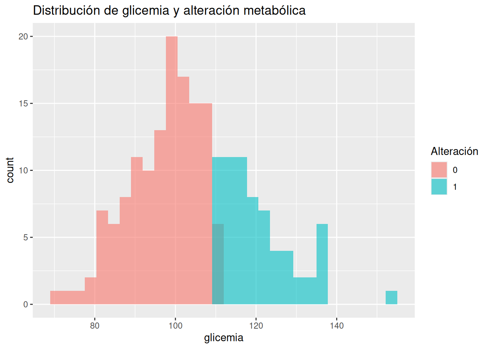
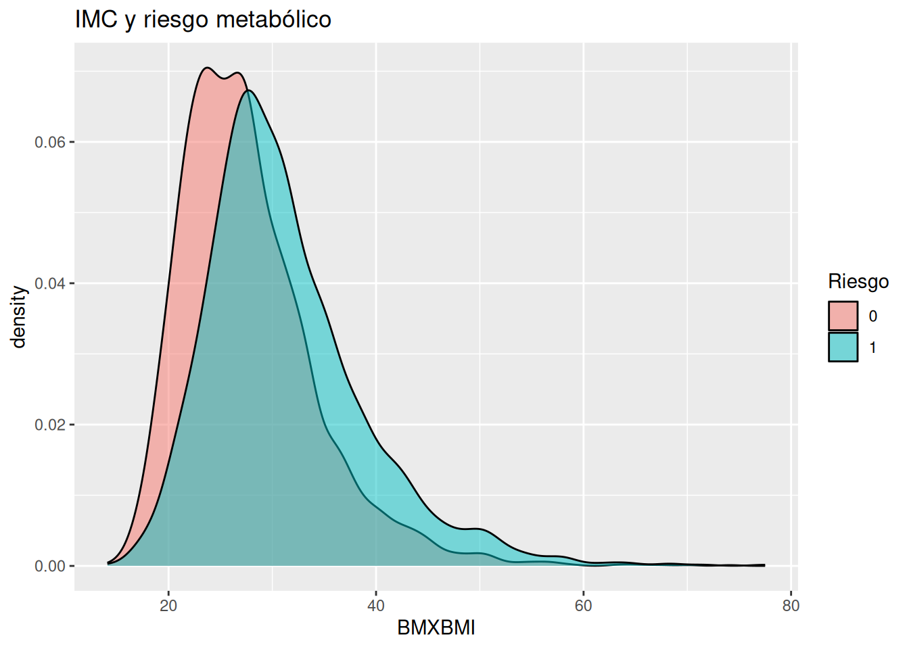
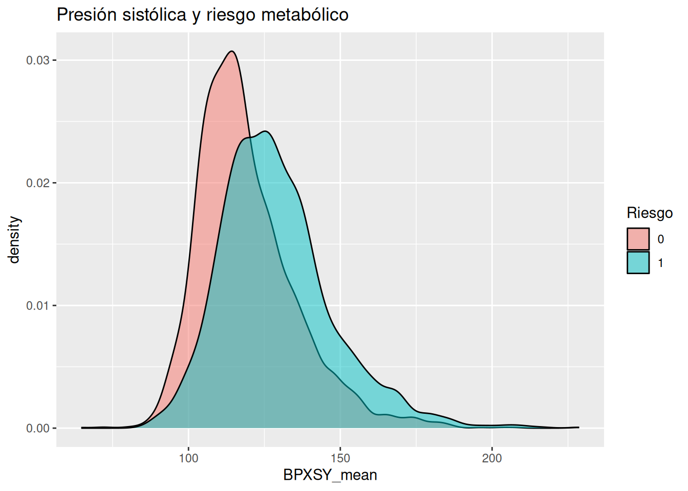

Imagina que tienes frente a ti a un paciente con obesidad.
Tiene:
IMC elevado
glicemia en ayunas ligeramente alta
presión arterial borderline
vida sedentaria
Ahora viene la pregunta clave:
👉 ¿Qué haces con esa información?
Aquí es donde empieza la diferencia entre tres niveles de pensamiento:
1. Describir datos (lo que “vemos”)
Esto es lo más básico:
“El paciente tiene IMC de 32”
“La glicemia es de 110 mg/dL”
“La presión está en 135/85”
👉 Es fotografía, no interpretación.
2. Inferir (lo que “creemos que significa”)
Aquí ya estás usando tu experiencia clínica:
“Probablemente hay resistencia a la insulina”
“Este paciente tiene riesgo de progresar a diabetes”
“La inflamación crónica puede estar presente”
👉 Aquí aparece algo clave:
No estás seguro… estás estimando.
3. Tomar decisiones (lo que “haces”)
Finalmente decides:
¿Intervenir ya o esperar?
¿Cambios en estilo de vida?
¿Solicitar más pruebas?
¿Iniciar tratamiento?
👉 Y aquí ocurre algo importante:
Toda decisión clínica se toma con incertidumbre.
Entonces… ¿qué hace un analista bayesiano?
Un analista bayesiano hace explícito este proceso que tú ya haces de forma intuitiva:
Flujo de trabajo bayesiano
Creencias iniciales (priors) Lo que sabes antes de ver los datos (tu experiencia, literatura, fisiopatología)
Datos (evidencia) Lo que observas en el paciente
Actualización (posterior) Cómo cambian tus creencias después de ver los datos
Decisión Qué haces con esa nueva información
Ejemplo clínico sencillo
Antes de ver al paciente, tú ya crees que:
La obesidad está relacionada con resistencia a la insulina La glicemia elevada aumenta riesgo cardiometabólico
👉 Eso es tu prior
Luego ves:
Glicemia = 110
IMC = 32
👉 Eso es la evidencia
Entonces piensas:
“Mi sospecha de alteración metabólica ahora es mayor”
👉 Eso es el posterior
Y decides:
“Voy a intervenir en estilo de vida de forma activa”
👉 Esa es la decisión
Idea clave del capítulo
👉 Los datos por sí solos no toman decisiones.
Necesitan:
contexto
interpretación
experiencia
Y eso es exactamente lo que formaliza el enfoque bayesiano.
2. Ejemplo simple (simulación en R)
Vamos a simular algo muy sencillo:
👉 Pacientes con distintos niveles de glicemia 👉 Queremos estimar si tienen alteración metabólica
set.seed(123)# Número de pacienten <-200# Crear una simulación de glicemia de pacientesdatos <-tibble(glicemia =rnorm(n, mean =105, sd =15),alteracion_metabolica =if_else(glicemia >110, 1, 0))# Histograma de la glicemia coloreado por alteración metabólicadatos %>%ggplot(aes(x = glicemia, fill =factor(alteracion_metabolica))) +geom_histogram(bins =30, alpha =0.6, position ="identity") +labs(title ="Distribución de glicemia y alteración metabólica",fill ="Alteración" )

¿Qué estamos viendo?
Valores más altos de glicemia → más probabilidad de alteración Pero no es perfecto Hay superposición
👉 Es decir:
No hay certeza absoluta.
Aquí aparece el punto clave
Si un paciente tiene glicemia de 108:
¿Está sano?
¿Está enfermo?
👉 No lo sabes con certeza.
Pero puedes decir:
👉 “Mi grado de creencia de que tenga alteración metabólica ha aumentado”
Eso ya es pensamiento bayesiano.
3. Ejemplo aplicado con NHANES
Ahora vamos a algo más real.
Trabajaremos con variables clave:
IMC (BMXBMI)
glicemia (LBXSGL)
HbA1c (LBXGH)
presión arterial
actividad física
Preparación de datos
# Crear la variable riesgo metabólico con los valores de glucosa y # hemoglobina glicosilada del nhanesdf_obesidad <- df_obesidad %>%mutate(riesgo_metabolico =if_else(# # Glucosa y hemoglobina glicosilada LBXSGL >110| LBXGH >5.7,1, 0 ) )
Relación entre IMC y riesgo metabólico
# Gráfico de densidad del el índice de masa corporal coloreado por# rieso metabólicodf_obesidad %>%filter(!is.na(BMXBMI), !is.na(riesgo_metabolico)) %>%ggplot(aes(x = BMXBMI, fill =factor(riesgo_metabolico))) +geom_density(alpha =0.5) +labs(title ="IMC y riesgo metabólico",fill ="Riesgo" )

Interpretación de la gráfica
A mayor IMC → mayor probabilidad de riesgo
Pero no todos los obesos tienen riesgo
Y algunos con IMC menor sí lo tienen
👉 Esto es fundamental:
La obesidad no es solo peso.
Agregamos presión arterial
# Gráfico de densidad de la presión sistólica media coloreado por# riesgo metabólicodf_obesidad %>%filter(!is.na(BPXSY_mean), !is.na(riesgo_metabolico)) %>%ggplot(aes(x = BPXSY_mean, fill =factor(riesgo_metabolico))) +geom_density(alpha =0.5) +labs(title ="Presión sistólica y riesgo metabólico",fill ="Riesgo" )

¿Qué vemos?
Presión más alta → mayor riesgo Pero nuevamente… hay superposición
👉 No hay reglas absolutas.
4. Interpretación clínica
Ahora conectemos todo.
Caso clínico integrado
Paciente:
IMC: 31
glicemia: 108
HbA1c: 5.8
presión: 138/88
sedentario
Enfoque tradicional (simplificado)
“No es diabético → todo bien”
👉 Error frecuente.
Enfoque bayesiano
Tú piensas:
Antes del paciente → ya sabes que obesidad + sedentarismo → riesgo
Ves los datos → glicemia borderline + HbA1c elevada
Actualizas tu creencia → el riesgo ahora es alto
👉 No necesitas un “diagnóstico binario”
Decisión clínica
Intervenir estilo de vida
Monitoreo cercano
Educación metabólica
Conexión con obesidad (visión de fondo)
Desde el enfoque Hormonal de la Obesidad:
👉 La obesidad no es solo exceso de grasa
Es:
disfunción hormonal
resistencia a la insulina
inflamación crónica
Lo importante
Los datos (IMC, glicemia, presión):
👉 son señales indirectas del problema real
Y como toda señal:
son imperfectas
tienen ruido
generan incertidumbre
Mensaje final del capítulo
👉 Ser analista bayesiano es hacer explícito lo que ya haces como médico:
Partir de conocimiento previo
Interpretar datos imperfectos
Actualizar tu juicio
Tomar decisiones bajo incertidumbre
Lo que viene después
En el siguiente capítulo vas a dar un paso clave:
👉 Pasar de intuición a cuantificación
¿Cómo representamos nuestras creencias?
¿Cómo medimos la incertidumbre?
¿Cómo empezamos a “formalizar” este proceso?
Ahí empieza realmente el poder del enfoque bayesiano.
Ejercicios — Capítulo 2
De datos a decisiones clínicas
Ejercicio 1 — Describir vs inferir vs decidir
🎯 Objetivo
Diferenciar claramente los tres niveles del capítulo.
📝 Instrucción
Dado este paciente:
IMC: 33
glicemia: 112
HbA1c: 5.9
presión arterial: 140/90
sedentario
Responde:
¿Qué puedes describir (solo datos)?
¿Qué puedes inferir (interpretación)?
¿Qué decisión clínica tomarías?
Ejercicio 2 — Tu primer “prior clínico”
🎯 Objetivo
Hacer explícitas tus creencias iniciales.
📝 Instrucción
Antes de ver cualquier dato:
Responde:
👉 “En un paciente con obesidad, ¿qué tan probable crees que tenga alteración metabólica?”
Baja
Media
Alta
Luego justifica:
¿En qué te basas?
¿experiencia?
¿fisiopatología?
¿literatura?
Ejercicio 3 — Actualizar creencias
🎯 Objetivo
Practicar el paso más importante: actualización
📝 Instrucción
Partes de este prior:
👉 “Probabilidad media de alteración metabólica”
Ahora agregas datos uno por uno:
IMC = 31
glicemia = 108
HbA1c = 5.8
Sedentarismo
Pregunta
Después de cada dato:
👉 ¿tu creencia sube, baja o se mantiene?
Ejercicio 4 — Ver la incertidumbre en datos simulados